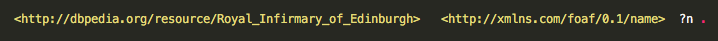
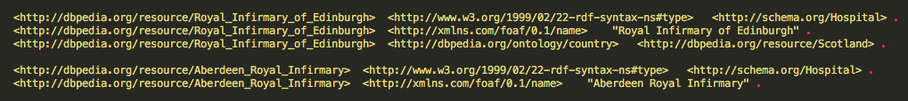
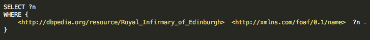
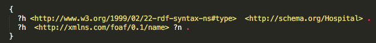
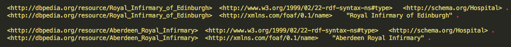
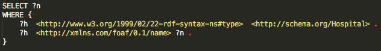
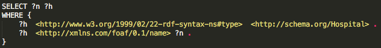
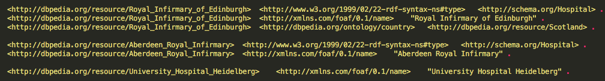

Integrating Health Data
Overview
In order to realise the full potential of data science in health, it is imperative that we integrate data across different areas, organisations and countries. But integrating health data has been a key challenge for many years. In this topic you will be introduced to the graph data model and ontologies, which effectively address this challenge.
Addressing Challenges to Data Integration through Ontologies and the Graph Data Model
Watch the following 3 videos to find out about the main challenges to integrating health data, and to learn how ontologies and the graph data model can effectively address these challenges.
https://media.ed.ac.uk/media/1_tf4ftpp5
Link to the transcript
https://media.ed.ac.uk/media/1_ut4sgw74
Link to the transcript
https://media.ed.ac.uk/media/1_ckezvjlp
Link to the transcript
SPARQL Querying
We can query RDF data to get information of interest. The language for querying RDF data is called SPARQL, which stands for SPARQL Protocol And RDF Query Language.
1. SPARQL Query Form
The basic form of SPARQL queries is as follows:
SELECT ...
WHERE {...}
In the SELECT-part we specify what results we want to get, in other words the variables that we are interested in. In the WHERE-part we specify the conditions for the data of interest. This is in the form of triple or graph patterns.
2. Triple patterns
Triple patterns help us select triples from a given RDF graph. Just like RDF is built on the concept of a triple, consisting of subject, predicate, and object, SPARQL is built upon the concept of triple pattern, which is also written as subject, predicate, and object (remember – in this order!), and has to be terminated with a full stop. The difference between RDF triples and SPARQL triple patterns is that a SPARQL triple pattern can include variables: any or all of the subject, predicate, and object values in a triple pattern can be a variable.
Let’s look at an example. Suppose that we have the following triple pattern:

In this triple pattern, <http://dbpedia.org/resource/Royal_Infirmary_of_Edinburgh> is the subject, <http://xmlns.com/foaf/0.1/name> is the predicate and ?n is the object. The ? symbol in front of “n” signifies that this is a variable.
So how do triple patterns help us select triples from a given RDF graph? Suppose that we have an RDF dataset that consists of the following triples:

When using the above triple pattern against this RDF dataset, it would be matched against the second triple (as the subject in the triple pattern matches the subject in this triple, and the predicate in the triple pattern also matches the predicate in this triple), and hence the n-variable would be matched with “Royal Infirmary of Edinburgh”.
A simple SPARQL query example
And how can we get the results for the n-variable? By specifying the SELECT-part of our query to include the n-variable. So a SPARQL query that gives us the name of <http://dbpedia.org/resource/Royal_Infirmary_of_Edinburgh> should look like this:

The result of this query will be: “Royal Infirmary of Edinburgh”
Note that we re using the same variable name (i.e. “?n”) in the SELECT- and the WHERE- part. Note also that we could have given the variable any name we wanted, such as “?var”, “?name” or “?RIE_name”.
3. Graph patterns
A graph pattern is a collection of triple patterns, enclosed in { }.
Let’s look at an example. Suppose that we have the following graph pattern:

This consists of two triple patterns:
?h <http://www.w3.org/1999/02/22-rdf-syntax-ns#type> <http://schema.org/Hospital> .
?h <http://xmlns.com/foaf/0.1/name> ?n .
Note that by using the same variable ?h in both triple patterns in the above graph pattern, we are asking for the same h-thing to be a hospital and to have name ?n.
If we used this graph pattern against the previous RDF dataset, it would be matched against the following two sets of triples:

To be more precise, in the first set of triples, ?h would be matched with <http://dbpedia.org/resource/Royal_Infirmary_of_Edinburgh> and ?n would be matched with “Royal Infirmary of Edinburgh” .
We can use the above graph pattern in a SPARQL query to get information of interest. Let’s look at two possible variations:
SPARQL query - version 1
Suppose that we are interested in the names of all hospitals in our dataset. The SPARQL query for this is as follows:

The results of this query will be:
"Royal Infirmary of Edinburgh"
"Aberdeen Royal Infirmary"
SPARQL query - version 2
Now suppose that we are interested in the names and URIs of all hospitals in our dataset. The SPARQL query for this is as follows:

The results of this query will be:
“Royal Infirmary of Edinburgh” <http://dbpedia.org/resource/Royal_Infirmary_of_Edinburgh>
“Aberdeen Royal Infirmary” <http://dbpedia.org/resource/Aberdeen_Royal_Infirmary>
Graph patterns need to be fully matched
Note that for a graph pattern to be matched, all its triple patterns need to be patched with the data. Let’s illustrate this with an example. Suppose that we want to run the same SPARQL query as above against the following dataset:

The results of this query will still be:
"Royal Infirmary of Edinburgh" <http://dbpedia.org/resource/Royal_Infirmary_of_Edinburgh>
"Aberdeen Royal Infirmary" <http://dbpedia.org/resource/Aberdeen_Royal_Infirmary>
Why is that? In other words, why will information for University Hospital Heidelberg not be returned? Because there is no triple in this dataset where the first triple pattern ( i.e. ?h <http://www.w3.org/1999/02/22-rdf-syntax-ns#type> <http://schema.org/Hospital> .) can be matched against <http://dbpedia.org/resource/University_Hospital_Heidelberg> .
Bonus Content: Professor Aileen Keel
Professor Aileen Keel is the Director of the Innovative Healthcare Delivery Programme and former Deputy Chief Medical Officer for Scotland. In this interview, she is talking about the Innovative Healthcare Delivery Programme, which seeks to realise the vision of linking NHS Scotland’s rich data assets and deliver value rapidly to patients, healthcare professionals, and the wider NHS.
https://media.ed.ac.uk/media/1_e06xrjmv